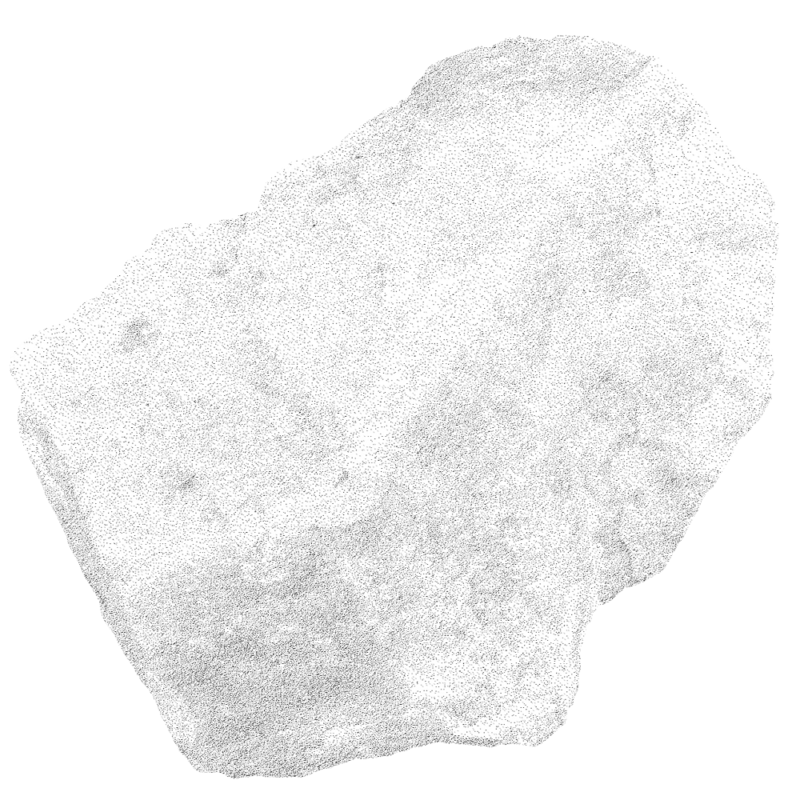

Wellen Ich stehe im Meer. Der Horizont hält den Atem an. Eine Welle erhebt sich, findet ihren Weg zu mir. Ich schließe die Augen. Nicht aus Angst sondern aus Vertrauen. Ich tauche unter. Der Druck des Wassers löst meine Füße vom Grund. Der Boden, an den ich glaubte, trägt mich nicht mehr. Ich schwebe. Ich halte nichts fest. Ich wehre mich nicht. Ich tue nichts. Genau darin tue ich alles. Der Druck lässt nach. Die Stille wird weiter. Ich tauche auf. Salz brennt auf der Haut, Wasser liegt schwer in den Wimpern. Ich wische es mir aus dem Gesicht. Ich atme. Ich finde mich an einem anderen Punkt wieder. Alles hat sich verändert und doch nichts.
Der Mensch hat gelernt, Flüsse zu begradigen, Meere einzudämmen und Berge zu durchbohren. Wir errichten Mauern gegen das Wasser, messen den Wind und geben dem Chaos Namen. Aus Angst vor der Unberechenbarkeit haben wir Kontrolle zur Tugend erhoben. Auch im Inneren. Auch in unseren Leben. In der Natur überlebt nicht, wer sich gegen jede Welle stemmt, sondern wer lernt, mit ihr zu schwimmen. Wer den Rhythmus liest, statt ihn zu bekämpfen. Die Kraft der Welle steht für die Krisen unseres Lebens. Sie erhebt sich ohne Vorwarnung, folgt keinem Zeitplan und kennt keine Rücksicht. Krisen sind kein Bruch im System, sie sind das System. Sie begleiten uns, seit wir leben und doch versuchen wir unermüdlich sie zu bändigen. Krisen gleichen den Gezeiten. Sie kommen, ob wir sie wollen oder nicht. Sie sind weder gut noch böse, sie sind Bewegung und dennoch reagieren wir auf sie mit Widerstand. Wir stemmen uns gegen die Welle, kämpfen gegen ihre Kraft, als wäre sie unser Feind. Dabei vergessen wir, dass wir selbst Teil dieses Ozeans sind. Es liegt eine Wahl in jeder Krise. Nicht darin, sie zu verhindern, sondern darin, wie wir ihr begegnen. Halten wir mit aller Kraft am Ufer fest, aus Angst vor dem Unbekannten? Oder lassen wir los und vertrauen darauf, dass die Bewegung uns trägt? Wenn ich durch die Straßen gehe, sehe ich Gesichter, die müde geworden sind. In Zügen höre ich Stimmen, die vom Mangel sprechen. Das Negative scheint leichter auszuhalten als das Positive. Schmerz ist konkret. Hoffnung verlangt Vertrauen. Vielleicht ist es genau das, was uns so schwerfällt. Nicht das Leiden, sondern das Annehmen. Krisen umgeben uns ein Leben lang. Sie lassen sich nicht stoppen, nicht umleiten, nicht ignorieren. Doch wir können entscheiden, wie wir sie benennen. Ob wir sie als Störung betrachten oder als Einladung. Eine Krise kann ein in tausend Scherben zerbrechender Teller sein oder ein Abschied, eine Trennung, ein Tod. Die Auslöser unterscheiden sich, doch ihr Wesen bleibt gleich. Sie fordert uns auf, innezuhalten. Hinzusehen. Uns selbst zu begegnen. In der Natur überlebt nicht, wer sich gegen jede Welle stemmt, sondern wer lernt, mit ihr zu schwimmen. Wer den Rhythmus liest, statt ihn zu bekämpfen. Vielleicht gilt das auch für uns. Vielleicht ist das Untertauchen kein Scheitern, sondern Teil des Weges. Wenn wir der Krise, wie der Welle ins Gesicht schauen und uns von ihr mitreißen lassen, tauchen wir oft schneller wieder auf als jene, die verzweifelt versuchen, über Wasser zu bleiben. Das Wasser brennt in den Lungen, doch es formt auch. Es schleift. Es verändert. Krisen sind schmerzhaft. Sie reißen uns aus dem Gewohnten, nehmen uns Sicherheiten, die wir für selbstverständlich hielten. Doch sie öffnen Räume, die wir ohne sie nie betreten hätten. Veränderung fühlt sich im Moment oft wie Verlust an und entpuppt sich erst im Rückblick als Wachstum. Vielleicht ist der größte Irrtum unserer Zeit der Glaube, alles kontrollieren zu müssen. Die Natur lehrt uns etwas anderes. Leben bedeutet Bewegung. Anpassung. Loslassen. Vielleicht liegt wahre Stärke nicht darin, die Welle zu besiegen, sondern ihr zu vertrauen, sich tragen zu lassen und an einem anderen Ufer neu zu beginnen.